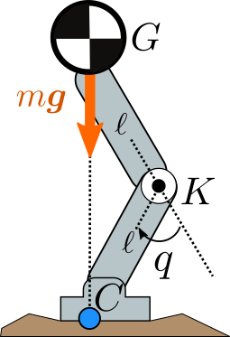

Consider the planar legged model depicted to the right. The robot's mass is
concentrated at its center of mass G, meaning we neglect the mass of
the two links of the leg. The center of mass is located above the center of
pressure C and the robot is
in static equilibrium. The leg has a single revolute joint located at the knee K with joint
angle q. Both of its links have the same length CK=KG=ℓ.
- Question:
- What is the joint torque τ exerted by the knee to keep the leg
in static equilibrium?
Note that this is a question page, so there is no need to post the answer via
the discussion form below. However, if you have an original derivation of the
solution (e.g. using Lagrangian dynamics or spatial vector algebra), you are
welcome to post it.
Discussion
Feel free to post a comment by e-mail using the form below. Your e-mail address will not be disclosed.